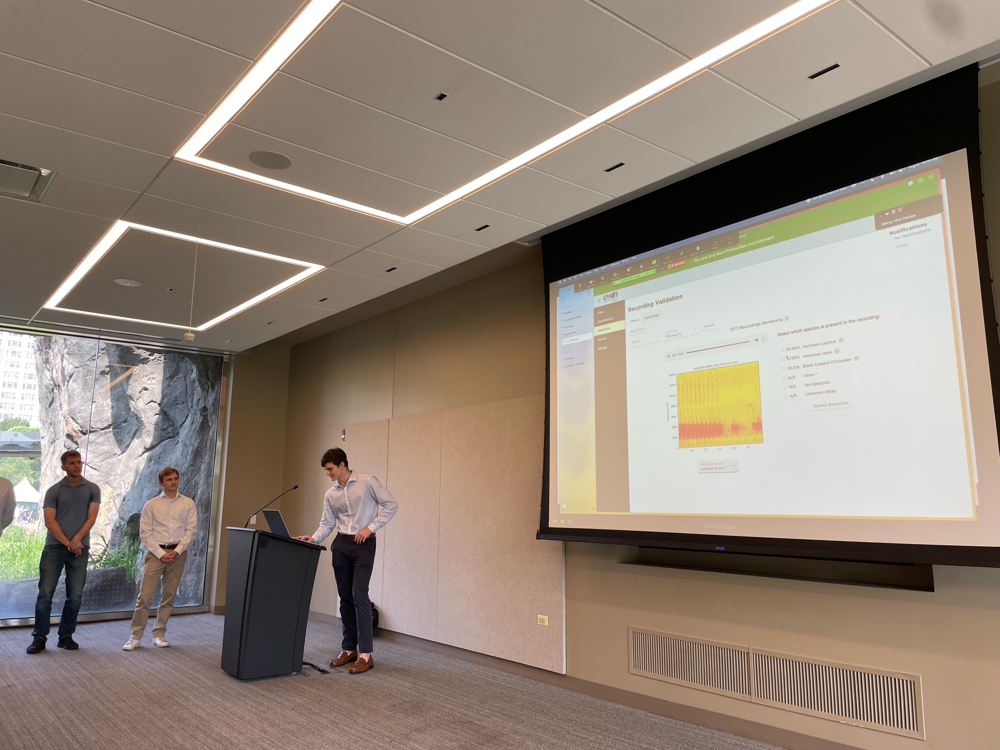

My Accomplishments at Pariveda
As a technical consultant, my primary responsibility involved full-stack web development for the Urban Wildlife Information Network (UWIN) research website. To provide context, when we embarked on this project, UWIN had an outdated web app that allowed users to upload and identify animal photos from camera traps. To modernize and enhance the platform, we initiated a series of significant changes. We restructured the database to support audio data alongside images, upgraded the app from Angular v4 to v16, and integrated a state-of-the-art acoustic data processing pipeline.
These modifications opened the door for over 1000 global users to upload audio files collected from Audio Recording Units (ARUs). The pipeline efficiently divides 30+ minute recordings into 3-second segments, distinguishing bird songs from urban noise, and employing an advanced ML model to identify the detected species. It provides users with information on the detected bird species, including a percentage of confidence and an audio spectrogram image, all of which is stored in MySQL or Google Cloud Platform (GCP)
One of my key contributions was the development of the new recordings validations page from the ground up. This page is where all the output from our pipeline is delivered from the server to the client. Building this page posed a variety of intricate technical challenges. It displays all 3-second clips that received a bird identification from the ML model, and these results are sorted by confidence level. Integrating audio files, spectrograms, recordings, and species data from GCP buckets and MySQL necessitated the development of efficient API calls, Cloud Functions, and data structures for data management. Researchers can now validate detections by listening to these 3-second clips and confirming the presence of specific bird species. The absence of similar services has firmly established our client as a leader in animal identification research.
Our work involved evolving the database architecture, implementing GCP cloud functions for table interactions, and establishing a streamlined workflow for audio and spectrogram integration. Regular communication with the client ensured alignment, and we utilized Jira for project management, maintaining velocity and adapting based on sprint insights. I managed feature branches across both the APP and API repositories, deploying to a development site mirroring production for thorough testing before deployment to the production environment.
Our application now serves over 50 global partners across 100+ locations, boasting a user base of over 1000 users. With the added capabilities for audio file management and bird identification, we have positioned our client for success in attracting new partners and users from around the world